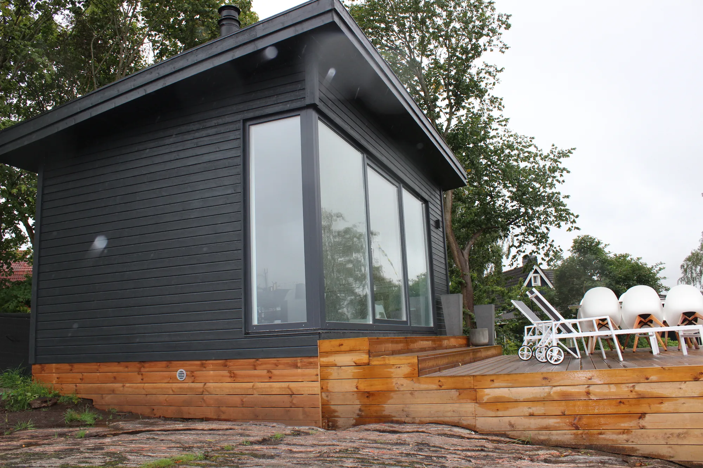
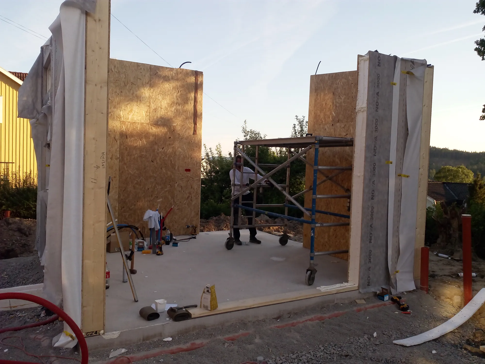
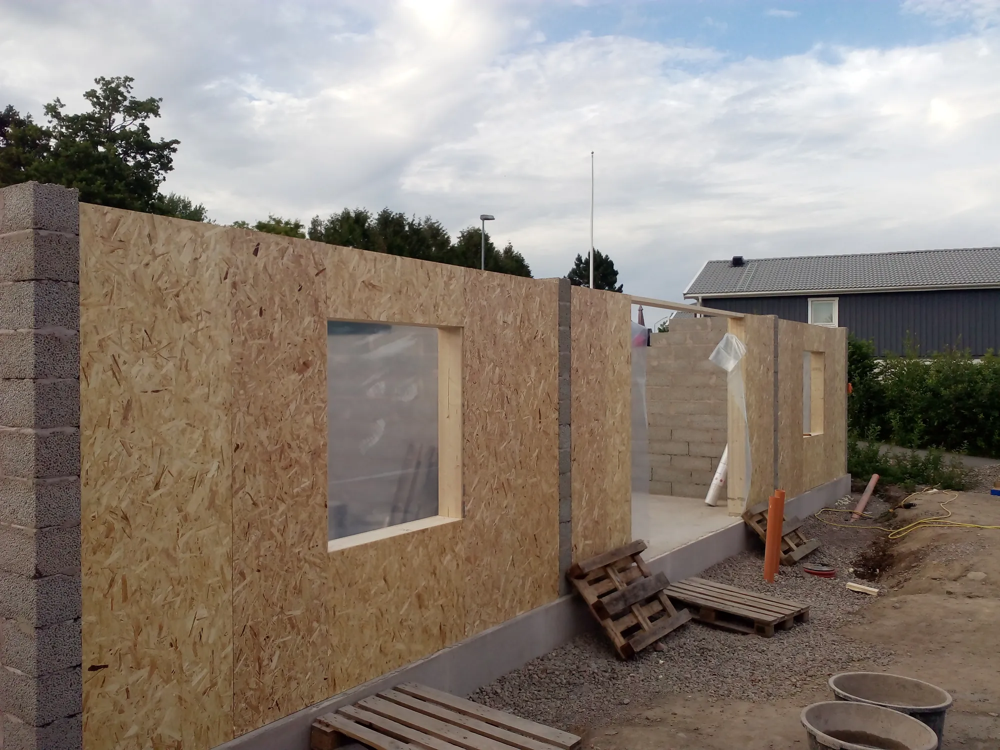
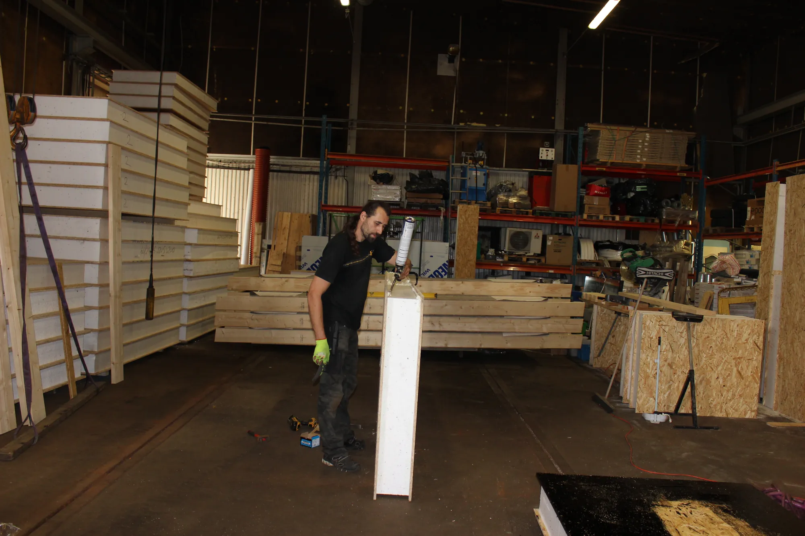
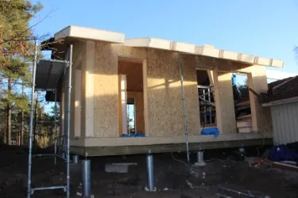

Isolla Bygg
Hustillverkning
Tillbyggnader, attefallshus och hela hus – byggda med egentillverkade SIP-element, underhållsfria fasader och våra egna fönster och dörrar.











01SIP-element
Vi producerar SIP-moduler (Structural Insulated Panels) i egen regi – välisolerade, lätta och snabba att resa på plats.
02Underhållsfri fasad
Husen kläs med underhållsfri fasadpanel som aldrig behöver målas. Läs mer om fasader
03Referensprojekt
- Tillbyggnad i KållekärTillbyggnad
- Attefallshus MölndalAttefallshus
- Attefallshus Norra GranlidenAttefallshus
- Norra GranlidenTillbyggnad
- Suterränghus i HjärtumNybyggnad
- Produktion av SIP-modulerFabrik, Lödöse

Fönster & dörrar efter mått
Berätta vad du planerar – vi tar fram en offert.
Allt tillverkas på beställning i vår fabrik i Lödöse. Välkommen att besöka utställningen i Lilla Edet, eller skicka en förfrågan direkt.